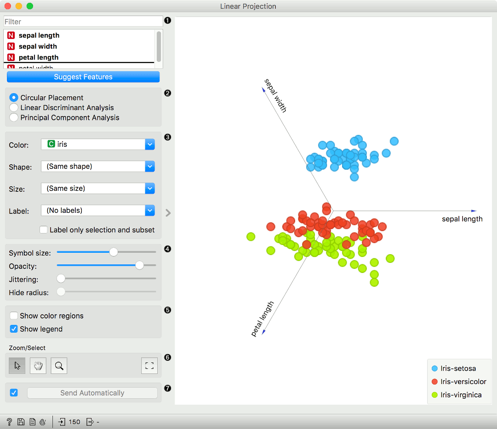
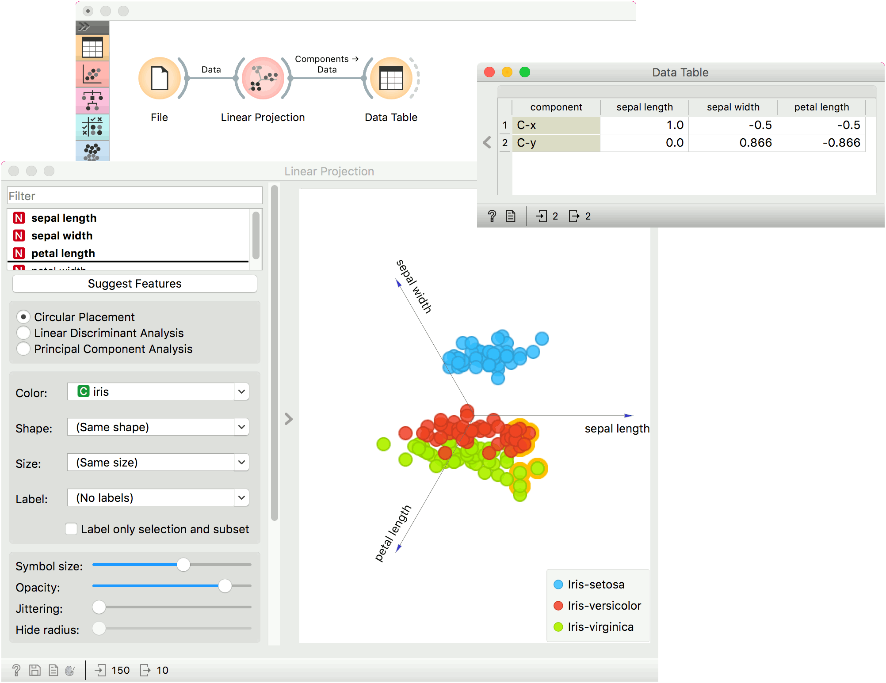

Linear Projection
A linear projection method with explorative data analysis.
Inputs
- Data: input dataset
- Data Subset: subset of instances
- Projection: custom projection vectors
Outputs
- Selected Data: instances selected from the plot
- Data: data with an additional column showing whether a point is selected
- Components: projection vectors
This widget displays linear projections of class-labeled data. It supports various types of projections such as circular, linear discriminant analysis, and principal component analysis.
Consider, for a start, a projection of the Iris dataset shown below. Notice that it is the sepal width and sepal length that already separate Iris setosa from the other two, while the petal length is the attribute best separating Iris versicolor from Iris virginica.

- Axes in the projection that are displayed and other available axes. Optimize your projection by using Suggest Features. This feature scores attributes and returns the top scoring attributes with a simultaneous visualization update. Feature scoring computes the classification accuracy (for classification) or MSE (regression) of k-nearest neighbors classifier on the projected, two-dimensional data. The score reflects how well the classes in the projection are separated.
- Choose the type of projection:
- Circular Placement
- Linear Discriminant Analysis
- Principal Component Analysis
- Set the color of the displayed points. Set shape, size, and label to differentiate between points. Label only selected points labels only selected data instances.
- Adjust plot properties:
- Symbol size: set the size of the points.
- Opacity: set the transparency of the points.
- Jittering: Randomly disperse points with jittering to prevent them from overlapping.
- Hide radius: Axes inside the radius are hidden. Drag the slider to change the radius.
- Additional plot properties:
- Show color regions colors the graph by class.
- Show legend displays a legend on the right. Click and drag the legend to move it.
- Select, zoom, pan and zoom to fit are the options for exploring the graph. Manual selection of data instances works as an angular/square selection tool. Double click to move the projection. Scroll in or out for zoom.
- If Send automatically is ticked, changes are communicated automatically. Alternatively, press Send.
Example
The Linear Projection widget works just like other visualization widgets. Below, we connected it to the File widget to see the set projected on a 2-D plane. Then we selected the data for further analysis and connected it to the Data Table widget to see the details of the selected subset.

References
Koren Y., Carmel L. (2003). Visualization of labeled data using linear transformations. In Proceedings of IEEE Information Visualization 2003, (InfoVis’03). Available here.
Boulesteix A.-L., Strimmer K. (2006). Partial least squares: a versatile tool for the analysis of high-dimensional genomic data. Briefings in Bioinformatics, 8(1), 32-44. Abstract here.
Leban G., Zupan B., Vidmar G., Bratko I. (2006). VizRank: Data Visualization Guided by Machine Learning. Data Mining and Knowledge Discovery, 13, 119-136. Available here.